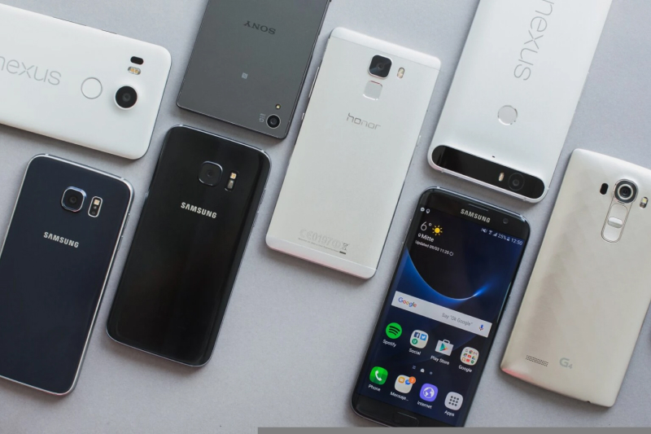

Notebook na Black Friday 2022: como comprar o computador ideal
A Black Friday 2022 pode ser uma boa oportunidade para quem quer comprar um notebook por um bom custo-benefício. Para escolher o modelo ideal, no entanto, é preciso ficar atento a alguns detalhes. É importante, por exemplo, definir se o laptop é pra uso pessoal ou profissional. Geralmente, computadores para trabalho demandam mais eficiência e exigem um investimento mais alto.
Ler mais

Bola com sensor: veja nova tecnologia de impedimento da Copa do Catar
A Copa do Mundo 2022, que começou neste domingo (20) no Catar, terá um ajudante diferente nesta edição: uma tecnologia que será capaz de reduzir o tempo de análise dos lances de possíveis impedimentos durante os jogos.Em julho, a Fifa anunciou que vai utilizar um sistema de última geração para tornar mais rápida a detecção, chamado de "impedimento semiautomático", que conta com um sensor dentro da bola.
Ler mais

Celular na Black Friday: confira 8 modelos que merecem a sua atenção
A Black Friday é um evento mundialmente conhecido pelos preços com desconto. Para este ano, vale a pena ficar de olho em alguns celulares de marcas como Samsung, Apple, Xiaomi, Asus e Motorola. Os aparelhos proporcionam várias características que chamam atenção, como design dobrável, tela extensa para multitarefas, câmeras com estabilização automática de imagem e qualidade de até 108 MP. Além de displays com taxa de atualização de 120 Hz. A lista a seguir traz opções úteis para a maior parte do público, sejam usuários entusiastas de jogos ou amantes de uma boa fotografia.
Ler mais